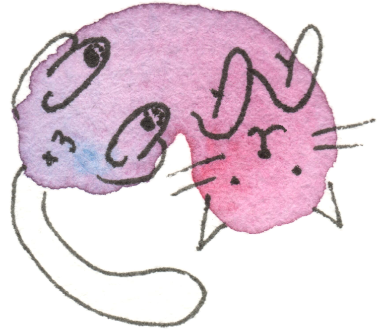
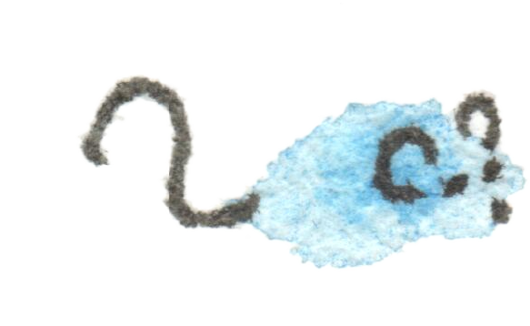

Listen to the game description, or tap anywhere to skip it. To hear it again later, find and double-tap the cat at the top of the screen. Mindfulness Play, a calm game of solitaire. Your goal is to send every card home to the four foundation piles, each built up from Ace to King. The board, in reading order, is: first a cat and a mouse resting together at the top, then the four foundations and the draw pile, then the seven columns of cards, then the five buttons — new game, undo, invitation, show me a move, and settings. Every card is hand-painted in soft watercolor and ink, and the face cards — the Kings, Queens, Jacks, and Aces — have their own cute, playful cats on them instead of the traditional court and ace designs. Swipe right to move through it; each card tells you where it sits and whether it has a move to make. To move a card, double-tap it — or press Enter — and it travels on its own to the best legal spot: home to its foundation, or onto the card it can build on. Double-tap the draw pile to turn a card, and again once it is empty to turn them all over. There are no timers and no score — take all the time you like.


Welcome to mindful play
Mindfulness, woven into everyday moments
No moves left. A soft pink watercolor splotch with black ink lines over it: a round cat flopped down on its belly for a rest, legs sprawled out, long tail trailing off to one side, eyes closed — completely relaxed.